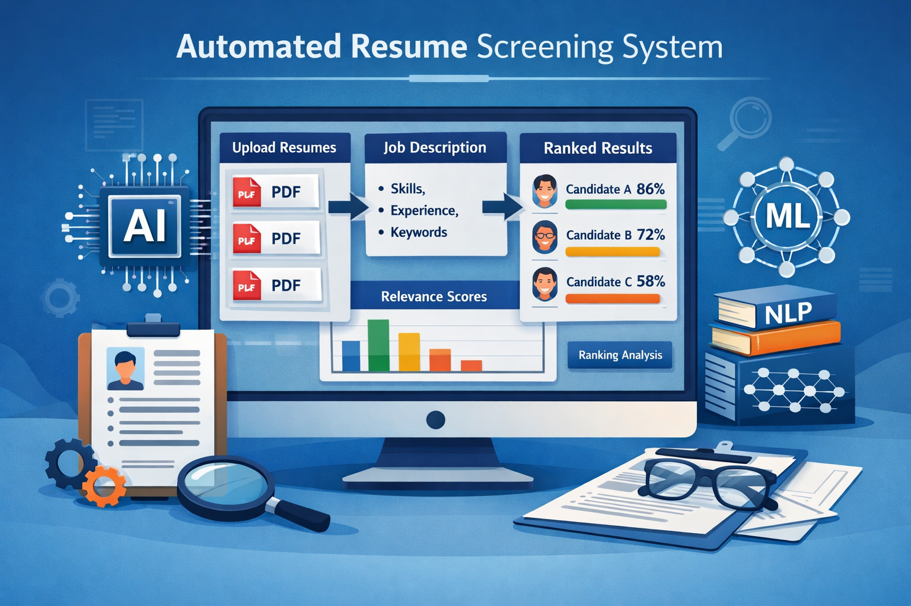

Hello, I'm
Krishna Prasad
Python & Django Enthusiast

Python & Django Enthusiast

I am an MCA graduate with a strong passion for building reliable and scalable applications, especially using Python and SQL. I enjoy solving real-world problems by converting complex requirements into clean, efficient, and maintainable solutions.
During my academic journey, I worked on multiple projects such as a Bike Rental Management System and an Automated Resume Screening Tool using NLP. These projects helped me gain hands-on experience in backend logic, database design, data processing, and practical problem-solving.
I have experience working with Python,Django,FastAPI,SQL and HTML,CSS, and I am currently improving my skills in Python Fullstack development. I am also exploring modern technologies like Artificial Intelligence and data-driven applications to build smarter systems.
I consider myself a continuous learner who enjoys experimenting with new tools, writing clean and understandable code, and improving application performance. I value consistency, logical thinking, and attention to detail in everything I build.
Currently, I am seeking an opportunity where I can grow as a software professional, contribute to meaningful projects, and learn from experienced developers while delivering impactful solutions.
Building efficient scripts and backend logic using Python and core libraries.
Designing schemas and managing data with SQL and MySQL.
Creating responsive front-end interfaces using HTML, CSS, and JavaScript.

The Easy Bike Rental System is a web-based application designed to simplify the process of renting bikes. It allows users to browse available bikes, make bookings, and manage rentals efficiently.
The system includes separate modules for users and administrators. It validates availability to prevent double bookings and ensures accurate rental scheduling using a MySQL database.

An intelligent web-based application designed to analyze, evaluate, and rank resumes automatically based on a job description using Natural Language Processing (NLP).
Recruiters can upload resumes in PDF format. The system extracts text, applies TF-IDF vectorization, and calculates a relevance score to rank candidates, all visualized via a Streamlit interface.
My education has been a journey of learning and development.
Palamuru University, Telangana
2022 - 2024Grade: 7.70 CGPA
I completed my Master's degree in Computer Applications. I developed a solid understanding of programming concepts, software development practices, and core computer science subjects including Data Structures, Algorithms, and Web Technologies.

Don Bosco Degree College, Hyderabad
2020 - 2023Grade: 8.5 CGPA
Gained a strong foundation in Computer Science and Electronics. Worked on academic projects involving web technologies and database management systems.